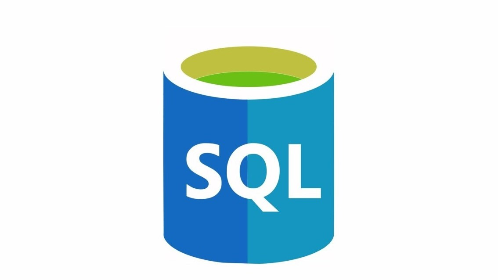
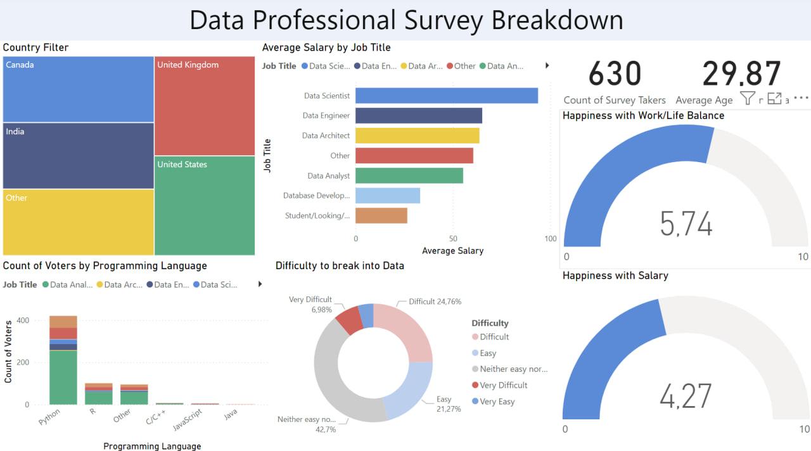
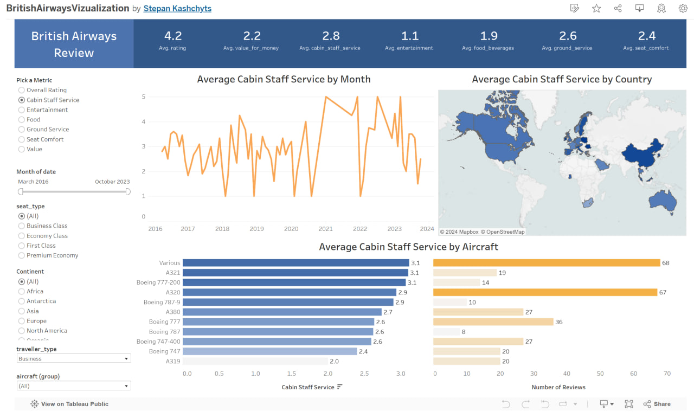

Eliminated duplicate records using SQL window functionsStandardized text data and formatted date columns. Handled missing values by deleting incomplete rows and updating NULLs. Optimized dataset by removing unnecessary columns
Designed a Python script to fetch and analyze cryptocurrency data from CoinMarketCap API. Implemented data pipeline for API data retrieval, processing, and continuous CSV updates. Visualized cryptocurrency price trends and percentage changes using Seaborn and Matplotlib, showcasing insights into market dynamics. Demonstrated proficiency in data handling, API integration, and advanced data visualization techniques.

Cleaned and transformed survey data using Power Query and Power BI, addressing missing values and inconsistencies. Developed DAX calculations to analyze the job market, including salary averages and skill requirements. Designed interactive dashboards to visualize key metrics such as job growth and regional salary differences.
Conducted data analysis and visualization using Python libraries (Pandas, Matplotlib). Created histograms, bar plots, pie charts, scatter plots, and box plots for trend identification. Performed data cleaning, aggregation, and statistical analysis. Extracted insights on customer behavior, purchase trends, and seasonal patterns.

Project is designed to monitor the price of a specific product on Amazon. It checks the price and sends an email notification if the price drops below a specified threshold. Features
Extract product information (title and price) from an Amazon webpage.
Record product data into a CSV file.
Send an email notification if the price falls below the set threshold.

Performed exploratory data analysis (EDA) and visualization for Airbnb listings in New York and Albany using Tableau. Created interactive dashboards to explore key metrics such as listing prices, occupancy rates, and geographic distribution. Analyzed trends and patterns to provide insights into the local rental markets.